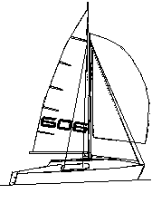

|
|
|
|
|

rodzaje klas wêz³y
zielony |
OPTYMIST najlepsza jednoosobowa klasa miêdzynarodowa dla dzieci do lat 15
-d³ugoœæ - 2,3 m omega (regatowa) Najpopularniejszy jacht mieczowy w Polsce konstrukcji Juliusza Sieradzkiego z 1942 roku. Kad³ub okr¹g³odenny pocz¹tkowo drewniany, teraz z ¿ywic, z komorami wypornoœciowymi. O¿aglowanie bermudzkie. Za³oga 3-6 osób.
MAK 606 Œredniej wielkoœci mieczowy jacht turystyczny. Za³oga 4 osoby. Jacht wygodny dla ¿eglugi rodzinnej daj¹cy siê stosunkowo ³atwo transportowaæ za samochodem osobowym.
- Dlugoœæ ca³kowita 6.06 m moth niema oficjalnego portalu dla tej klasy unosi siê na wodzie dziêki chydro skszyd³u kture pozwala szybowaæ po wodzie 
micro 550 jedna ze szypszych klas kabinowych na regatach w boszkowie wygrywa ka¿de konkurêcje
!!!!!!!!!!!!strona w trakcie pszygotowañ!!!!!!!!!!!!!!!! pszez iloœæ takich ¿agluwek niejesteœmy w stanie wszystkich pomieœæiæ lecz jak
|
 -Dlugoœæ ca³kowita 6.20 m
-Dlugoœæ ca³kowita 6.20 m